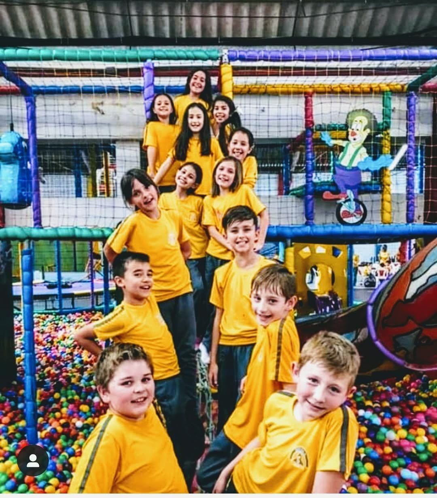
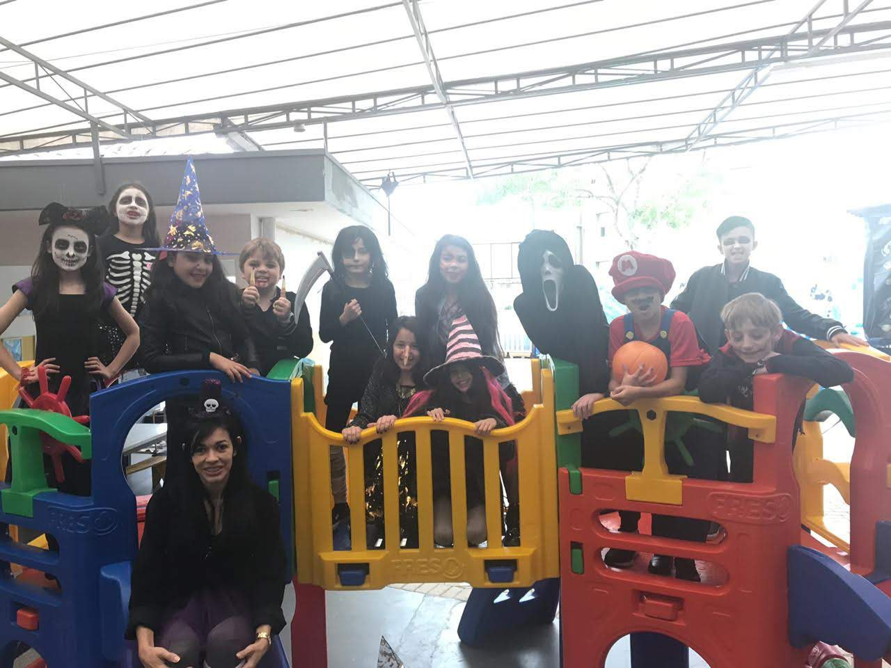
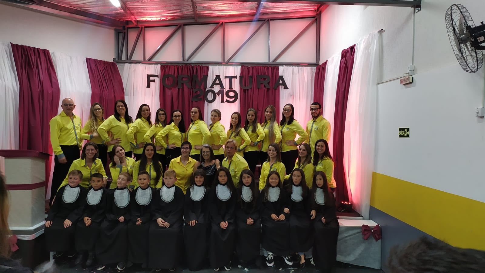
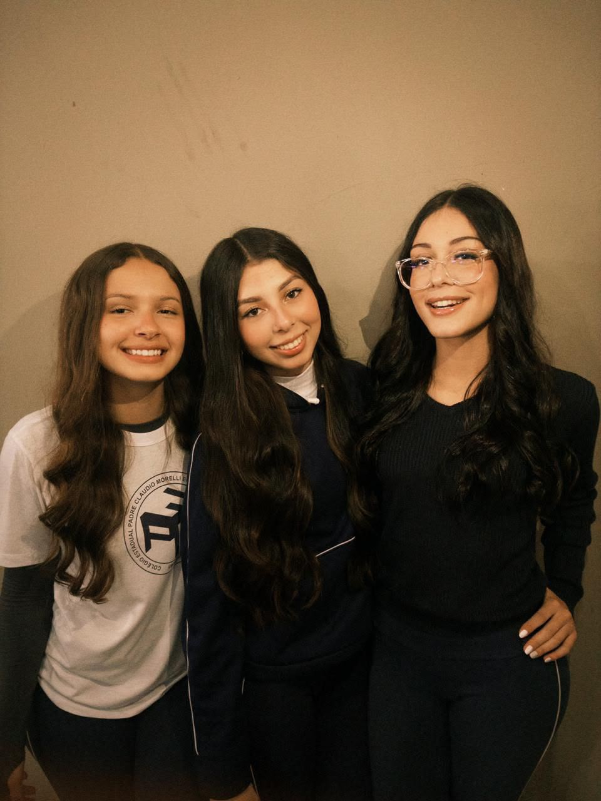
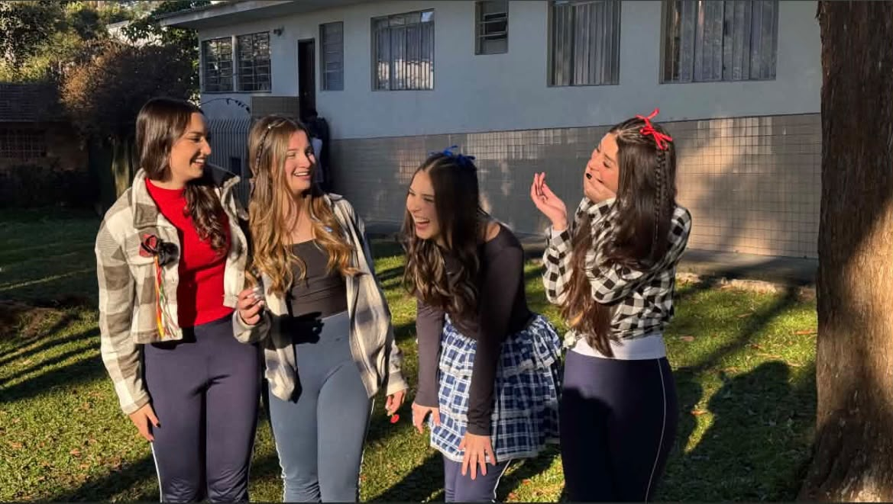
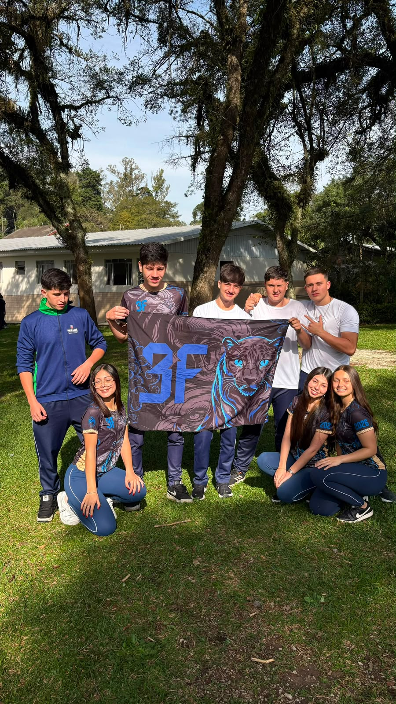

Minhas Memórias Escolares
Um resgate sincero e detalhado de cada fase da minha formação: as descobertas da infância, os causos marcantes, os desafios superados e as amizades que levarei para sempre.
O Início da Caminhada e a Superação da Timidez
Minha trajetória escolar começou no Pré II. Quando entrei na escola, não conhecia ninguém e era uma criança muito tímida, que tinha dificuldade para se enturmar. Aquele ambiente novo trazia uma mistura de curiosidade e receio.
Porém, com o passar do tempo, fui fazendo amizades, perdendo a vergonha e me soltando cada vez mais. Aos poucos, a escola se transformou em um lugar onde eu me sentia verdadeiramente acolhida e onde comecei a construir muitas lembranças especiais.
Desafio Superado: A Timidez Inicial
Vencer a vergonha de falar com os colegas foi o primeiro grande aprendizado social que moldou minha infância.
Infância Inesquecível, Descobertas e Causos Marcantes
Cursei todo o Ensino Fundamental I na Escola Três Cantos, uma fase que marcou profundamente a minha infância. Foram anos cheios de experiências, descobertas e momentos divertidos que guardo com enorme carinho.
Causo Marcante: A Perna e o Dedo Quebrados!
Nesse período, até alguns acidentes fizeram parte da minha história: quebrei uma perna e também um dedo! Acontecimentos inesperados que renderam histórias, gessos assinados pelos amigos e que acabaram se tornando parte inseparável das minhas lembranças escolares.
A escola também proporcionava muitas atividades e comemorações que tornavam os dias ainda mais especiais. Tive diversas festas do pijama na escola, festas juninas animadas, comemorações de Halloween com fantasias criativas e muitas outras datas comemorativas. Eram momentos de pura diversão, união e muitas risadas com os colegas.
Atividades Extracurriculares & Múltiplos Talentos
Além das aulas tradicionais, participei ativamente de várias atividades extracurriculares: judô, flauta, inglês e jazz, entre outras. Cada uma delas me proporcionou novas experiências, disciplina corporal e oportunidades de aprender coisas diferentes.
Quando olho para essa fase, percebo o quanto ela foi importante para minha infância. Foi ali que comecei a desenvolver minha personalidade, construir amizades sólidas, superar definitivamente a timidez e colecionar histórias que, até hoje, fazem parte de quem eu sou.

Brincadeiras na Escola Três Cantos
Halloween no parquinho
Formatura 2019 de BecaAdaptação, Pandemia e a Superação dos Maiores Desafios
O Ensino Fundamental II foi uma das fases mais desafiadoras da minha trajetória escolar. Passei boa parte desse período durante a pandemia, em uma escola totalmente nova: o Colégio Estadual Padre Cláudio Morelli.
A mudança trouxe muitas dificuldades, principalmente pela diferença marcante no método de ensino e pela necessidade de me adaptar a uma nova realidade, com aulas remotas e distanciamento físico. No começo, não tinha muitos amigos e não me sentia completamente confortável naquele ambiente.
Resiliência e Superação Pessoal
Enfrentei dificuldades tanto na adaptação escolar quanto na convivência, sendo uma fase bastante diferente de tudo o que eu havia vivido. Mas foi justamente esse desafio que me ensinou a ter paciência, independência nos estudos e força para recomeçar.
O Renascimento: Um Novo Começo e Amizades Maravilhosas
Quando o Ensino Médio começou, senti um grande alívio. Foi como iniciar uma nova etapa, com novas oportunidades e a possibilidade concreta de viver experiências diferentes e enriquecedoras.
Aos poucos, construí amizades maravilhosas, conheci pessoas que fizeram toda a diferença na minha trajetória e passei a me sentir muito mais confortável, leve e acolhida no ambiente escolar.
Essa fase foi marcada por momentos inesquecíveis de alegria, companheirismo, trabalhos em equipe, longas conversas no pátio, brincadeiras diárias e experiências que tornaram os dias na escola muito mais prazerosos e especiais.

Trio inseparável no colégio
Risadas soltas na Festa JuninaO Terceirão 3F, a Responsabilidade do Futuro e a Despedida
Chegar ao 3º ano do Ensino Médio trouxe uma experiência única e intensa: a responsabilidade de começar a decidir o meu futuro. Foi o momento crucial de pensar sobre profissão, vestibular, faculdade, sonhos e os objetivos que desejo alcançar na vida adulta.
Nossa turma — o Terceirão 3F — uniu-se com uma energia contagiante. Criamos a bandeira da pantera negra com traços azuis, vestimos as camisas personalizadas do 3F, organizamos trotes saudáveis e dias temáticos com professores que marcaram nossa história.
A Reflexão de Encerramento de Ciclo
"Ao mesmo tempo em que surgiram dúvidas e inseguranças sobre o que vem pela frente, também nasceu a expectativa de começar uma nova fase da vida. Percebi que estava encerrando um ciclo que durou muitos anos e que, independentemente do caminho que escolher, tudo o que vivi durante minha trajetória escolar contribuiu para a pessoa que estou me tornando."

A turma com a bandeira do 3F Turma 3F em dia comemorativo
Turma 3F em dia comemorativo